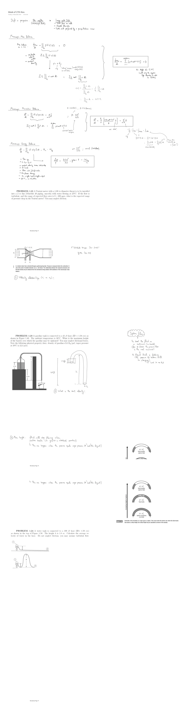

Original handwritten notes (PDF p. 71-73)

TA recitation notes for CHE 377, “week of 27th Nov.” (page dated 14 November 2023).
Shift in perspective: flow profiles (microscopic look) to large-scale info → total force on wall; → overall flow rate; → total work performed by a pump/turbine/mixer.
Macroscopic mass balance
→ Multiple inlets & outlets; → constant density: , with (magnitude; “velocity” direction or unit vector [constant @ each inlet/outlet]):
= angle b/w & (will carry the negative sign depending on inlet & outlet).
Macroscopic momentum balance
; β = 1 (turbulent); β = 0.75 (laminar).
, with and the inlet/outlet forces (viscous terms accounted for in !).
Macroscopic energy balance
→ open sys.; → E = E_K + E_P + U; → constant velocity across inlet/outlet; → ; → flow work/shaft work; → no phase change; → SS, single input/single output; → ΔT ≈ 0, no reaction:
Problems
Problem 1.21: a Venturi meter with a 1.00 in diameter throat is to be installed into a 2 in line (Schedule 40 piping, smooth) with water flowing at 25 °C. If the flow is turbulent, and the range of expected flow rates is 0–200 gpm, what is the expected range of pressure drop in the Venturi meter? You may neglect friction.
(figure: flow is directed through a gently tapering tube; pressure is measured before the contraction (1) and at the throat (2); the relationship between the measured pressures and the fluid velocity may be deduced from the MEB with the macroscopic mass balance.) 2″ Schedule 40 pipe: ID = 2.067″ (pg. 772 [Ex. 9.5]).
- Velocity relationships ( vs. )?
Problem 1.23: a gasoline tank is connected to a 25 ft hose (ID = 1.50 cm) as shown in Figure 1.49. The ambient temperature is 38 °C. What is the maximum height of the barrier over which the gasoline may be siphoned? You may neglect frictional losses. Note the following physical property data: density of gasoline = 5.6 lb_m/gal, vapor pressure at 38 °C is 12.3 psia.
(figure: the tank on a 4.0 ft stand with 1.5 ft of liquid, the hose over a barrier of height h into a can below; redrawn with the liquid surface 1.5 ft above the hose entry, 5.5 ft total drop and exit velocity .)
- What is the exit velocity?
- Max height: fluid will stop flowing when suction breaks (i.e. gas/air is introduced somehow) ↳ this can happen when the pressure equals vapor pressure (to “boil” the liquid).
Siphon flow: you treat the fluid as a continuum (no breaks) (free to choose the pressure that is the most convenient) ↓ as the liquid level is falling (the pressure @ bottom will be changing) ↳ hard to use that. (figure 1.16: formation of a vapor gap in a siphon with increasing height — functions normally; fluid boils; fluid breaks, siphon fails.)
Problem 1.24: a water tank is connected to a 100 ft hose (ID = 1.50 cm) as shown in the top of Figure 1.50. The height h is 1.8 m. Calculate the average velocity of water in the hose. Do not neglect friction; you may assume turbulent flow. (figure 1.50: tank (1) with liquid h above the hose outlet (2); below, the same with the hose rising over a hump of height H.)